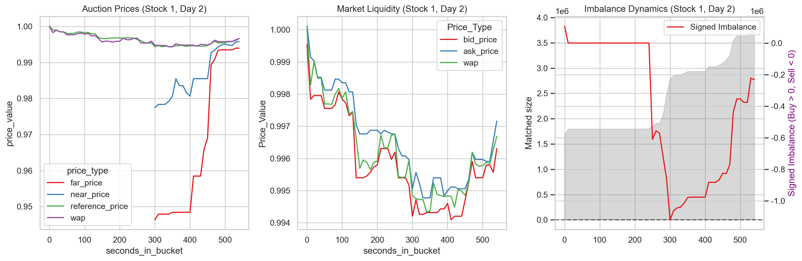
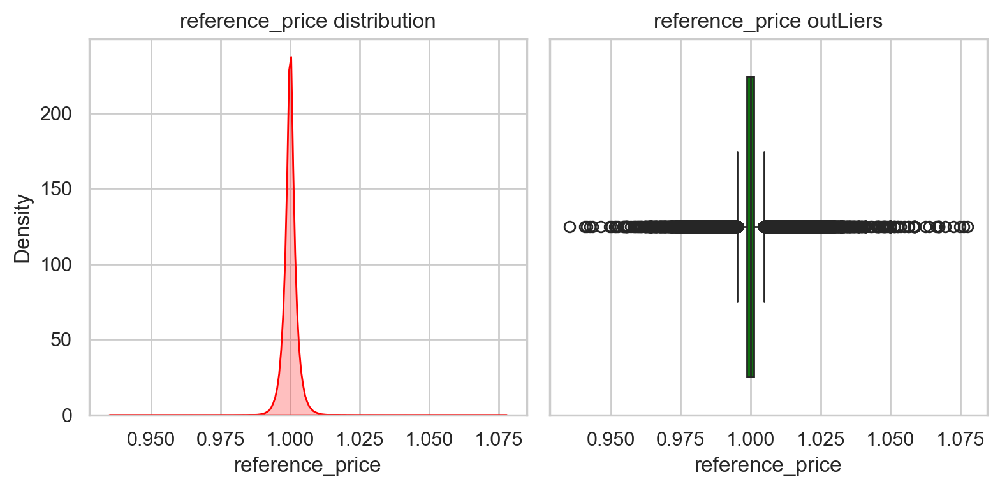
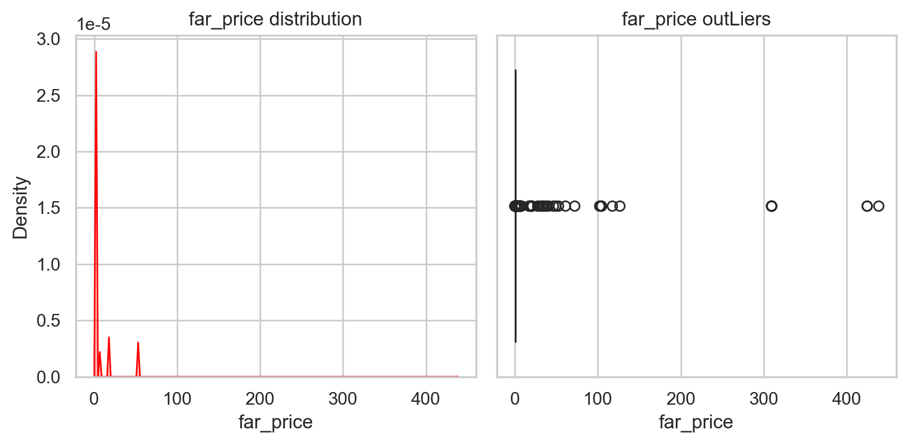
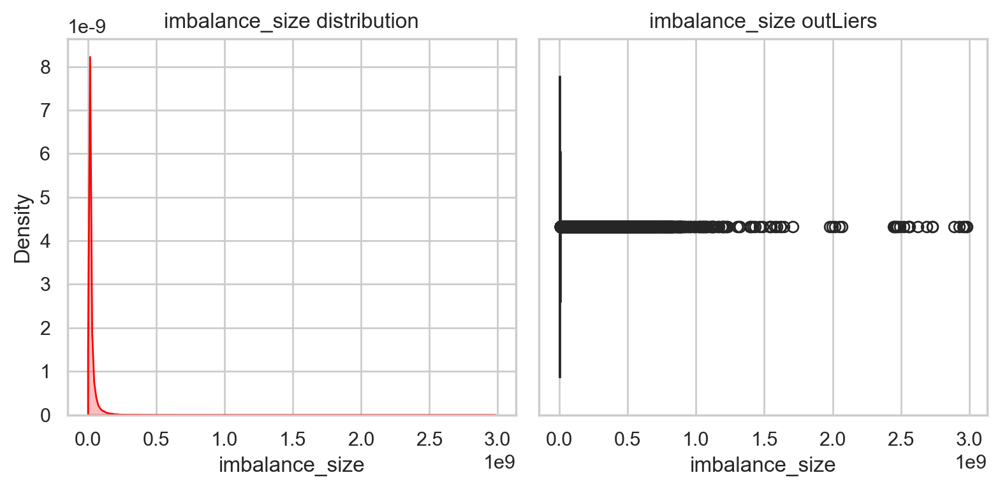
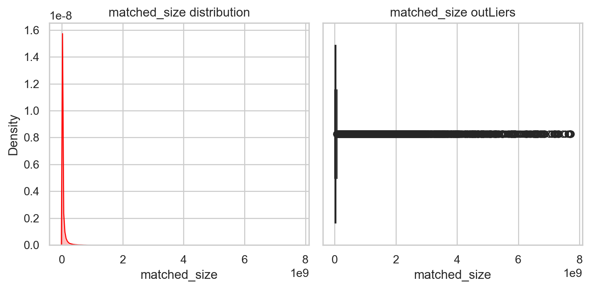
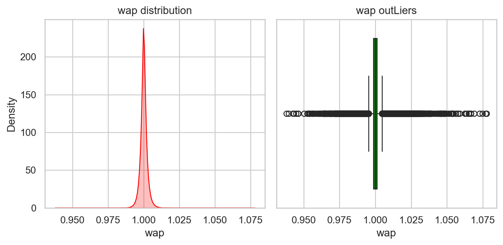
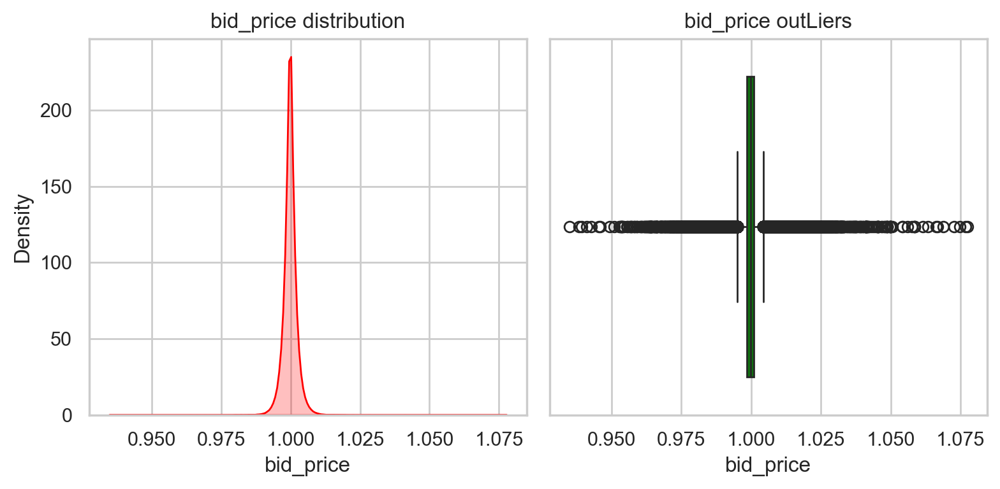
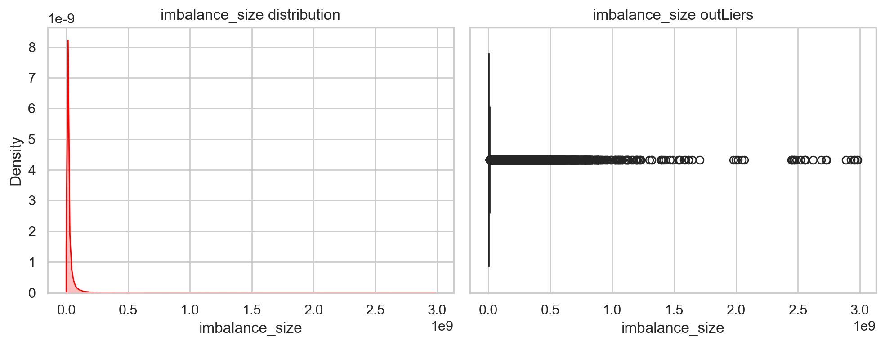
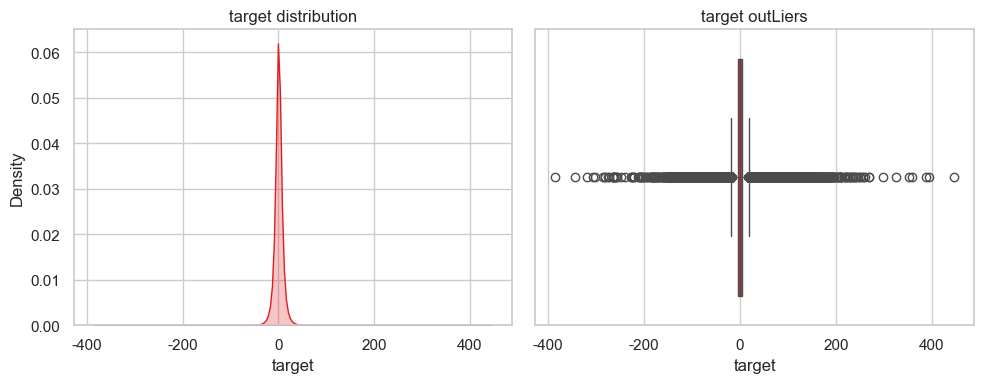

introduction#
着重于线性模型的实践
预测股票收盘价相对涨幅
最后10分钟，允许委托，不支持撤单，最后一刻统一价格撮合（按照成交量最大），产生收盘价。
近端价、远端价、参考
15:50:00开始收盘竞价，每隔10秒收集数据
0-300秒：纳斯达克不公布近端和远端价格
300-600: 300开始实时发布近端/远端价格
600：价格确定
远端价：一些人等到第30秒发起订单，就是这一秒，远端价就是只看这几个人可以成交的价格。如果Nan就是得不到成交价格
近端价：把这些人的订单和白天剩余订单全在一起，计算出的成交价格就是 近端价。 近端价相比远端价更加稳定。
参考价：近端价和远端价都可能会出现很离谱的价格，参考价是市场设定的保护范围
这三个价格最终会收敛到一起
imbalance失衡：
比如苹果股票，400秒时候。
按照参考价
场景1：买方多。
imbalance_size= 100万 表示按照参考价，不能成交的订单额。即买的人多imbalance_buy_sell_flag= 1matched_size= 300万， 按照参考价，此时能够成交的订单额
场景2：正好平衡
imbalance_size= 0imbalance_buy_sell_flag= 0matched_size= 400万， 按照参考价，此时能够成交的订单额
wap
是成交量加权平均价格，所以总是介于ask和bid之间 $$ \frac{BidPrice * BidSize + AskPrice * AskSize}{BidSize + AskSize} $$
target：
基于当前wap，预测60s后的wap。这不能反应市场情况，会做一个相对市场指数的涨跌幅。 即是否能跑赢大盘
比如wap涨了1.2%，市场指数涨了1.3%，z相对涨幅是-0.1%。 wap涨了 -1.2%， 市场涨了 -1.3%， 相对涨幅 0.1%
$$ target_t = (\frac{StockWap_{t+60}}{StockWap_{t}} - \frac{IndexWap_{t+60}}{IndexWap_{t}}) * 1000 $$
$target_t$表示的是t时刻进行预测。如$target_t>0$ ： 预测60秒后，股票涨的比大盘多，或是 跌的比大盘少
IndexWap 是未知数，但对于同一时间的股票而言，这是不变量
因此如果要精确得到$target_t$， 需要知道市场指数的涨幅以及股票60s后的wap。
从预测模型角度，我们是可以直接预测$target_t$，不需要预测分量，
import pandas as pd
import numpy as np
import pandas as pd
import matplotlib.pyplot as plt
import seaborn as sns
import gc
import warnings
import re
from sklearn.linear_model import Ridge
from sklearn.preprocessing import StandardScaler
from sklearn.impute import SimpleImputer
from sklearn.pipeline import Pipeline
from sklearn.model_selection import train_test_split
from sklearn.metrics import mean_absolute_error
from contextlib import contextmanager
import time
import os
from sklearn.base import BaseEstimator, TransformerMixin
from sklearn.utils.validation import check_is_fitted
gc.enable()
warnings.filterwarnings('ignore')
plt.rcParams['font.sans-serif'] = ['SimHei']
plt.rcParams['axes.unicode_minus'] = False
plt.rcParams['figure.figsize'] = (4,3)
plt.rcParams['figure.dpi'] = 200
sns.set_theme(style="whitegrid", palette="Set1")
data = pd.read_csv('train.csv')
data.columns
Index(['stock_id', 'date_id', 'seconds_in_bucket', 'imbalance_size',
'imbalance_buy_sell_flag', 'reference_price', 'matched_size',
'far_price', 'near_price', 'bid_price', 'bid_size', 'ask_price',
'ask_size', 'wap', 'target', 'time_id', 'row_id'],
dtype='object')
def info_data(df):
print(f'shape {df.shape}')
n_stock =len(df['stock_id'].value_counts())
print(f'stocks {n_stock}')
n_days = len(df['date_id'].value_counts())
print(f'days {n_days}')
info_data(data)
shape (5237980, 17)
stocks 200
days 481
def plot_stock(df, stock, date):
fig, axes = plt.subplots(1,3, figsize=(15,5))
plot_df = df[(df['stock_id'] ==stock) & (df['date_id'] == date) ]
melted_data = plot_df.melt(
id_vars = 'seconds_in_bucket',
value_vars = ['far_price', 'near_price', 'reference_price','wap'],
value_name = 'price_value',
var_name = 'price_type'
)
# 左图：近端、远端价、参考价 收敛
sns.lineplot(data=melted_data, x='seconds_in_bucket', y='price_value', hue='price_type', ax=axes[0])
axes[0].set_title(f"Auction Prices (Stock {stock}, Day {date})")
melted_data = plot_df.melt(
id_vars = 'seconds_in_bucket',
value_vars = ['bid_price', 'ask_price', 'wap'],
var_name = 'Price_Type',
value_name = 'Price_Value'
)
# 中图：订单本最优买卖价格
sns.lineplot(data=melted_data, x='seconds_in_bucket', y='Price_Value', hue='Price_Type', ax=axes[1])
axes[1].set_title(f"Market Liquidity (Stock {stock}, Day {date})")
# 右图：imbalance
axes[2].fill_between(plot_df['seconds_in_bucket'], plot_df['matched_size'], color='gray', alpha=0.3, label='Matched Size')
axes[2].set_ylabel('Matched size')
tax = axes[2].twinx()
plot_df['signed_imb'] = plot_df['imbalance_size'] * plot_df['imbalance_buy_sell_flag']
sns.lineplot(data=plot_df, x='seconds_in_bucket', y='signed_imb', ax=tax, label='Signed Imbalance')
tax.set_ylabel('Signed Imbalance (Buy > 0, Sell < 0)', color='purple')
axes[2].axhline(0, color='black', linestyle='--', alpha=0.5)
axes[2].set_title(f"Imbalance Dynamics (Stock {stock}, Day {date})")
plt.tight_layout()
plt.show()
plot_stock(data, stock=1, date=2)

metrics#
MAE
字段说明#
分布
统计：缺失、异常
stock_id: 股票的唯一标识。
date_id: 日期的唯一标识（按天递增）。
seconds_in_bucket: 当前竞价时段内经过的秒数（从 0 开始，每 10 秒一行，最高到 540）。
time_id / row_id: 唯一行标识。
竞价数据：反应供需
imbalance_size: 以美元计量的未匹配金额。
imbalance_buy_sell_flag: 失衡方向。1 代表买方失衡（买单多），-1 代表卖方失衡，0 代表平衡。
matched_size: 当前参考价下可以匹配成交的金额（美元）。
reference_price: 参考价格。它是使配对股份最大化、不平衡最小化的价格，通常被限制在最佳买卖价之间。
far_price: 远端价格。仅基于竞价订单计算的模拟成交价（不含连续交易时段的订单）。
near_price: 近端价格。结合了竞价订单和连续交易订单后的模拟成交价。
订单数据
bid_price / ask_price: 订单簿中最优买入/卖出价（买一/卖一）。
bid_size / ask_size: 最优买入/卖出位的美元金额。
wap:成交量加权平均价（Weighted Average Price）
target
数据是折叠后的，比如target，如果从查看角度，某个时刻 一些股票得target，这才是预测值，即预测得是一个target向量, 现在折叠起来 不好看了
因此我们对一个列空间进行统计分布，得到是 特征空间分布特征，无关哪个股票哪天得
def info_numeric_col(df, col):
""" col列空间：统计、分布图、异常值图。
"""
stat = pd.Series({
'missing': df[col].isnull().sum(),
'missing_percent': df[col].isnull().sum() / len(df[col]),
'mean': df[col].mean(),
'std':df[col].std(),
'min': df[col].min(),
'25%': df[col].quantile(0.25),
'median': df[col].quantile(0.5),
'75%': df[col].quantile(0.75),
'99%': df[col].quantile(0.99), # 长尾
'max': df[col].max(),
'skewness': df[col].skew(), # 偏度
'kurtosis': df[col].kurt() # 峰度
})
print(f"--- Statistics for {col} ---")
print(stat)
fig, axes = plt.subplots(1,2, figsize=(8,4))
sns.kdeplot(data=df, x=col, fill=True, ax=axes[0], color='red')
axes[0].set_title(f'{col} distribution')
sns.boxplot(data=df, x=col, ax= axes[1], color='green')
axes[1].set_title(f'{col} outLiers')
plt.tight_layout()
plt.show()
data.isnull().sum()
stock_id 0
date_id 0
seconds_in_bucket 0
imbalance_size 220
imbalance_buy_sell_flag 0
reference_price 220
matched_size 220
far_price 2894342
near_price 2857180
bid_price 220
bid_size 0
ask_price 220
ask_size 0
wap 220
target 88
time_id 0
row_id 0
dtype: int64
far_price，near_price,reference_price#
info_numeric_col(data, 'reference_price')
--- Statistics for reference_price ---
missing 220.000000
missing_percent 0.000042
mean 0.999996
std 0.002532
min 0.935285
25% 0.998763
median 0.999967
75% 1.001174
99% 1.007185
max 1.077488
skewness 0.396552
kurtosis 11.137140
dtype: float64

info_numeric_col(data, 'far_price')
--- Statistics for far_price ---
missing 2.894342e+06
missing_percent 5.525684e-01
mean 1.001713e+00
std 7.214705e-01
min 7.700000e-05
25% 9.963320e-01
median 9.998830e-01
75% 1.003318e+00
99% 1.052688e+00
max 4.379531e+02
skewness 4.765590e+02
kurtosis 2.448905e+05
dtype: float64

缺失值过多，这里缺失本身是一个信号。 设置为0.
imbalance_size,imbalance_buy_sell_flag,matched_size#
info_numeric_col(data, 'imbalance_size')
--- Statistics for imbalance_size ---
missing 2.200000e+02
missing_percent 4.200092e-05
mean 5.715293e+06
std 2.051591e+07
min 0.000000e+00
25% 8.453415e+04
median 1.113604e+06
75% 4.190951e+06
99% 7.636496e+07
max 2.982028e+09
skewness 2.399480e+01
kurtosis 1.746991e+03
dtype: float64

data['imbalance_buy_sell_flag'].value_counts()
imbalance_buy_sell_flag
-1 2084349
1 2022037
0 1131594
Name: count, dtype: int64
data['imbalance_buy_sell_flag'].isnull().sum()
0
info_numeric_col(data, 'matched_size')
--- Statistics for matched_size ---
missing 2.200000e+02
missing_percent 4.200092e-05
mean 4.510025e+07
std 1.398413e+08
min 4.316610e+03
25% 5.279575e+06
median 1.288264e+07
75% 3.270013e+07
99% 6.151657e+08
max 7.713682e+09
skewness 1.480903e+01
kurtosis 4.337253e+02
dtype: float64

bid_price, bid_size ,ask_price, ask_size, wap#
info_numeric_col(data,)
data[data[['bid_price', 'ask_price', 'wap']].isnull().all(axis=1)]
| stock_id | date_id | seconds_in_bucket | imbalance_size | imbalance_buy_sell_flag | reference_price | matched_size | far_price | near_price | bid_price | bid_size | ask_price | ask_size | wap | target | time_id | row_id | |
|---|---|---|---|---|---|---|---|---|---|---|---|---|---|---|---|---|---|
| 369508 | 131 | 35 | 0 | NaN | 0 | NaN | NaN | NaN | NaN | NaN | 0.00 | NaN | 0.00 | NaN | NaN | 1925 | 35_0_131 |
| 369700 | 131 | 35 | 10 | NaN | 0 | NaN | NaN | NaN | NaN | NaN | 0.00 | NaN | 0.00 | NaN | NaN | 1926 | 35_10_131 |
| 369892 | 131 | 35 | 20 | NaN | 0 | NaN | NaN | NaN | NaN | NaN | 0.00 | NaN | 0.00 | NaN | NaN | 1927 | 35_20_131 |
| 370084 | 131 | 35 | 30 | NaN | 0 | NaN | NaN | NaN | NaN | NaN | 0.00 | NaN | 0.00 | NaN | NaN | 1928 | 35_30_131 |
| 370276 | 131 | 35 | 40 | NaN | 0 | NaN | NaN | NaN | NaN | NaN | 0.00 | NaN | 0.00 | NaN | NaN | 1929 | 35_40_131 |
| ... | ... | ... | ... | ... | ... | ... | ... | ... | ... | ... | ... | ... | ... | ... | ... | ... | ... |
| 4774999 | 19 | 438 | 500 | NaN | -1 | NaN | NaN | NaN | NaN | NaN | 115491.18 | NaN | 1990.10 | NaN | 3.319979 | 24140 | 438_500_19 |
| 4775199 | 19 | 438 | 510 | NaN | -1 | NaN | NaN | NaN | NaN | NaN | 189040.50 | NaN | 26283.84 | NaN | -5.049705 | 24141 | 438_510_19 |
| 4775399 | 19 | 438 | 520 | NaN | -1 | NaN | NaN | NaN | NaN | NaN | 1392.93 | NaN | 43799.80 | NaN | -0.110269 | 24142 | 438_520_19 |
| 4775599 | 19 | 438 | 530 | NaN | -1 | NaN | NaN | NaN | NaN | NaN | 13531.32 | NaN | 26881.20 | NaN | -1.689792 | 24143 | 438_530_19 |
| 4775799 | 19 | 438 | 540 | NaN | -1 | NaN | NaN | NaN | NaN | NaN | 3183.84 | NaN | 39226.64 | NaN | 8.920431 | 24144 | 438_540_19 |
220 rows × 17 columns
可以删除这些行
info_numeric_col(data, 'wap')
--- Statistics for wap ---
missing 220.000000
missing_percent 0.000042
mean 0.999992
std 0.002498
min 0.938008
25% 0.998781
median 0.999997
75% 1.001149
99% 1.007088
max 1.077675
skewness 0.375521
kurtosis 10.886225
dtype: float64

info_numeric_col(data, 'bid_price')
--- Statistics for bid_price ---
missing 220.000000
missing_percent 0.000042
mean 0.999726
std 0.002499
min 0.934915
25% 0.998529
median 0.999728
75% 1.000905
99% 1.006707
max 1.077488
skewness 0.204360
kurtosis 10.457828
dtype: float64

info_numeric_col(data, 'ask_price')
--- Statistics for ask_price ---
missing 220.000000
missing_percent 0.000042
mean 1.000264
std 0.002510
min 0.939827
25% 0.999029
median 1.000207
75% 1.001414
99% 1.007501
max 1.077836
skewness 0.540173
kurtosis 11.469103
dtype: float64
info_numeric_col(data, 'imbalance_size')
--- Statistics for imbalance_size ---
missing 2.200000e+02
missing_percent 4.200092e-05
mean 5.715293e+06
std 2.051591e+07
min 0.000000e+00
25% 8.453415e+04
median 1.113604e+06
75% 4.190951e+06
99% 7.636496e+07
max 2.982028e+09
skewness 2.399480e+01
kurtosis 1.746991e+03
dtype: float64

target#
info_numeric_col(data, 'target')
--- Statistics for target ---
missing 88.000000
missing_percent 0.000017
mean -0.047561
std 9.452860
min -385.289800
25% -4.559755
median -0.060201
75% 4.409552
99% 25.990010
max 446.070430
skewness 0.204669
kurtosis 22.557970
dtype: float64

target的分布是 尖峰长尾。
处理#
把上面的分析，处理一下
print(data.shape)
data = data.dropna(subset=['bid_price', 'ask_price', 'wap'], how='all')
print(data.shape)
(5237760, 17)
(5237760, 17)
data.isnull().sum()
stock_id 0
date_id 0
seconds_in_bucket 0
imbalance_size 0
imbalance_buy_sell_flag 0
reference_price 0
matched_size 0
far_price 2894122
near_price 2856960
bid_price 0
bid_size 0
ask_price 0
ask_size 0
wap 0
target 0
time_id 0
row_id 0
dtype: int64
baseline#
$$ x_{stock, t} -> target_{stock, t} $$
stock_id: 标准化后， 应该去掉。不应该对结果影响
dateId: 同样的，不具备数值意义，也去掉
问题：
标准化，按照公式，应该根据stock分组后，stock内进行标准化， 列再标准化？
data.isnull().sum()
stock_id 0
date_id 0
seconds_in_bucket 0
imbalance_size 220
imbalance_buy_sell_flag 0
reference_price 220
matched_size 220
far_price 2894342
near_price 2857180
bid_price 220
bid_size 0
ask_price 220
ask_size 0
wap 220
target 88
time_id 0
row_id 0
dtype: int64
y = data['target']
X = data.drop(columns=['target', 'stock_id', 'date_id', 'seconds_in_bucket', 'row_id', 'time_id'])
X.isnull().sum()
imbalance_size 0
imbalance_buy_sell_flag 0
reference_price 0
matched_size 0
far_price 2894122
near_price 2856960
bid_price 0
bid_size 0
ask_price 0
ask_size 0
wap 0
dtype: int64
X_train, X_test, y_train, y_test = train_test_split(X,y)
print(X_train.shape, X_test.shape)
(3928320, 11) (1309440, 11)
model = Pipeline([
('imputer', SimpleImputer()),
('scaler', StandardScaler()),
('ridge', Ridge())
])
model.fit(X,y)
Pipeline(steps=[('imputer', SimpleImputer()), ('scaler', StandardScaler()),
('ridge', Ridge())])In a Jupyter environment, please rerun this cell to show the HTML representation or trust the notebook. On GitHub, the HTML representation is unable to render, please try loading this page with nbviewer.org.
Pipeline(steps=[('imputer', SimpleImputer()), ('scaler', StandardScaler()),
('ridge', Ridge())])SimpleImputer()
StandardScaler()
Ridge()
mean_absolute_error(y_test, model.predict(X_test))
6.314769828852861
from public_timeseries_testing_util import make_env
env = make_env()
counter = 0
for (test, revealed_targets, sample_prediction) in env.iter_test():
sample_prediction['target'] = model.predict(test.drop(columns=[ 'stock_id', 'date_id', 'seconds_in_bucket', 'row_id', 'time_id']))
env.predict(sample_prediction)
counter += 1
---------------------------------------------------------------------------
FileNotFoundError Traceback (most recent call last)
Cell In[86], line 2
1 counter = 0
----> 2 for (test, revealed_targets, sample_prediction) in env.iter_test():
3 sample_prediction['target'] = model.predict(test.drop(columns=[ 'stock_id', 'date_id', 'seconds_in_bucket', 'row_id', 'time_id']))
4 env.predict(sample_prediction)
File c:\Users\63517\Documents\data-analysis\kaggle\optiver_trading_at_the_close\public_timeseries_testing_util.py:45, in MockApi.iter_test(self)
43 dataframes = []
44 for pth in self.input_paths:
---> 45 dataframes.append(pd.read_csv(pth, low_memory=False))
46 group_order = dataframes[0][self.group_id_column].drop_duplicates().tolist()
47 dataframes = [df.set_index(self.group_id_column) for df in dataframes]
File c:\Users\63517\miniconda3\envs\data-analysis\lib\site-packages\pandas\io\parsers\readers.py:1026, in read_csv(filepath_or_buffer, sep, delimiter, header, names, index_col, usecols, dtype, engine, converters, true_values, false_values, skipinitialspace, skiprows, skipfooter, nrows, na_values, keep_default_na, na_filter, verbose, skip_blank_lines, parse_dates, infer_datetime_format, keep_date_col, date_parser, date_format, dayfirst, cache_dates, iterator, chunksize, compression, thousands, decimal, lineterminator, quotechar, quoting, doublequote, escapechar, comment, encoding, encoding_errors, dialect, on_bad_lines, delim_whitespace, low_memory, memory_map, float_precision, storage_options, dtype_backend)
1013 kwds_defaults = _refine_defaults_read(
1014 dialect,
1015 delimiter,
(...)
1022 dtype_backend=dtype_backend,
1023 )
1024 kwds.update(kwds_defaults)
-> 1026 return _read(filepath_or_buffer, kwds)
File c:\Users\63517\miniconda3\envs\data-analysis\lib\site-packages\pandas\io\parsers\readers.py:620, in _read(filepath_or_buffer, kwds)
617 _validate_names(kwds.get("names", None))
619 # Create the parser.
--> 620 parser = TextFileReader(filepath_or_buffer, **kwds)
622 if chunksize or iterator:
623 return parser
File c:\Users\63517\miniconda3\envs\data-analysis\lib\site-packages\pandas\io\parsers\readers.py:1620, in TextFileReader.__init__(self, f, engine, **kwds)
1617 self.options["has_index_names"] = kwds["has_index_names"]
1619 self.handles: IOHandles | None = None
-> 1620 self._engine = self._make_engine(f, self.engine)
File c:\Users\63517\miniconda3\envs\data-analysis\lib\site-packages\pandas\io\parsers\readers.py:1880, in TextFileReader._make_engine(self, f, engine)
1878 if "b" not in mode:
1879 mode += "b"
-> 1880 self.handles = get_handle(
1881 f,
1882 mode,
1883 encoding=self.options.get("encoding", None),
1884 compression=self.options.get("compression", None),
1885 memory_map=self.options.get("memory_map", False),
1886 is_text=is_text,
1887 errors=self.options.get("encoding_errors", "strict"),
1888 storage_options=self.options.get("storage_options", None),
1889 )
1890 assert self.handles is not None
1891 f = self.handles.handle
File c:\Users\63517\miniconda3\envs\data-analysis\lib\site-packages\pandas\io\common.py:873, in get_handle(path_or_buf, mode, encoding, compression, memory_map, is_text, errors, storage_options)
868 elif isinstance(handle, str):
869 # Check whether the filename is to be opened in binary mode.
870 # Binary mode does not support 'encoding' and 'newline'.
871 if ioargs.encoding and "b" not in ioargs.mode:
872 # Encoding
--> 873 handle = open(
874 handle,
875 ioargs.mode,
876 encoding=ioargs.encoding,
877 errors=errors,
878 newline="",
879 )
880 else:
881 # Binary mode
882 handle = open(handle, ioargs.mode)
FileNotFoundError: [Errno 2] No such file or directory: 'test.csv'